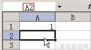
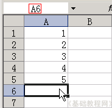
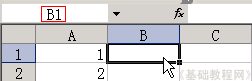
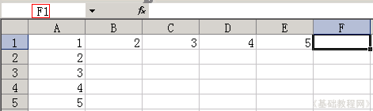
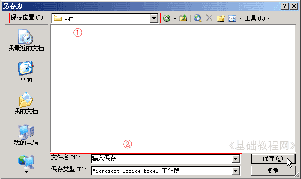

Excel 基础入门教程
输入和保存 返回
上一节我们认识了Excel的窗口，这一节我们来学习怎样把数据输入到表格中，下面我们来看一个练习；
1、启动Excel
1）点击“开始－所有程序－Microsoft－Microsoft Office Excel 2003”；
2）出现一个满是格子的空白窗口，这就是一张电子表格了，第一个格子看着边框要粗一些，处于选中状态；

2、输入数据
1）在左上角第一个格子中输入数字 1 ，然后按一下回车键，活动单元格移到下边一格；

2）继续输入2，然后按回车，接着输入3，一直输到5，可以用小键盘来输入；

3）再点一下第一个单元格A1，重新回到第一格，按一下Tab键(在Q的左边），活动单元格跳到B1；

输入 2 ，然后再按一下Tab键，活动单元格跳到右边 C1 的格子里，输入3；
4）继续按Tab键，一直输到5，可以发现按回车键是向下，按Tab键是向右；

3、保存文件
1）点菜单“文件－保存”命令，出来一个另存为对话框，在上面位置找到自己的文件夹，把下面的文件名改成“输入保存”，点右边的保存按钮；

2）第一次保存会出来另存对话框，以后点“保存”，直接就保存了，不再出现这个对话框；
本节学习了Excel的数据输入和文件保存，如果你成功地完成了练习，请继续学习下一课内容；
本教程由86团学校TeliuTe制作|著作权所有
基础教程网：http://teliute.org/
美丽的校园……
转载和引用本站内容，请保留版权信息和本站链接。